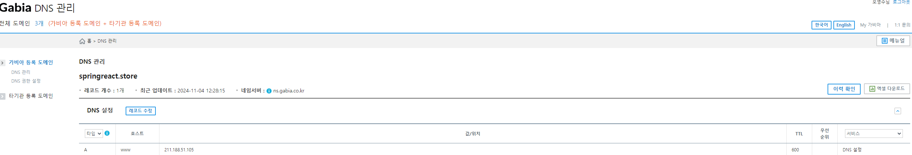
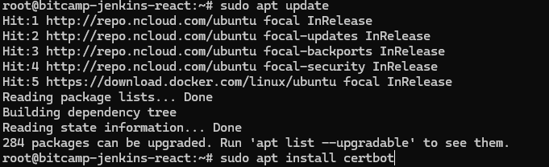
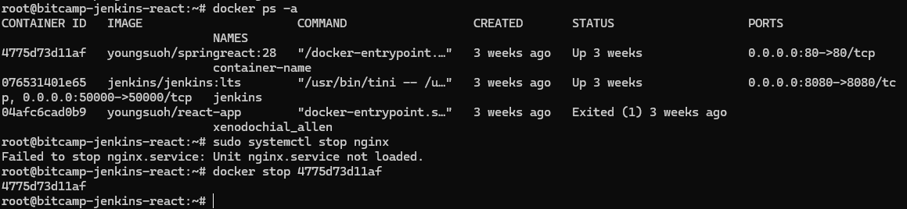
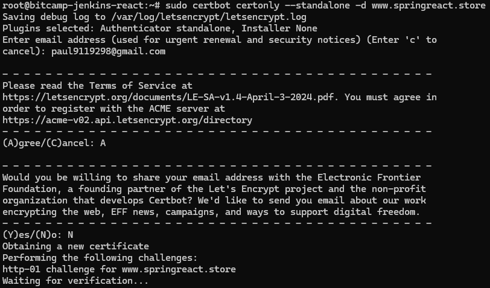
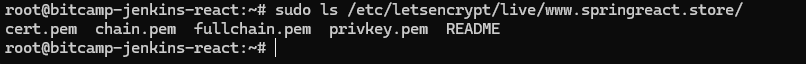

1. 가비아 도메인 구매

2. SSL 인증서 생성
Nginx 컨테이너에서 Let's Encrypt 인증서를 발급해야 해. 하지만 일반적으로 Docker 컨테이너 내부에서는 Certbot을 직접 실행하기 어렵기 때문에, 호스트 머신에서 발급하고 컨테이너에 마운트하는 방식으로 진행하면 편리해.
Certbot 설치 및 인증서 발급
- Certbot 설치
sudo apt update
sudo apt install certbot
- Certbot 인증서 발급
이전에 기존 nginx 를 중지하고 인증서 발급을 해야 됨 → Certbot은 인증서를 발급할 때 80번 포트를 사용하기 때문

sudo certbot certonly --standalone -d www.dr-rate.store - 이메일 입력 후 처음 항목만 Agree 진행
- Let's Encrypt 인증서는 90일간 유효하므로 만료 전에 Certbot에서 갱신하라는 알림을 이메일로 받을 수 있어

인증서 발급 후 다음 경로에 파일이 생성돼:
/etc/letsencrypt/live/www.springreact.store/fullchain.pem/etc/letsencrypt/live/www.springreact.store/privkey.pem
인증서 위치 확인
sudo ls /etc/letsencrypt/live/www.dr-rate.store /
3. Github 프로젝트에 Nginx 설정
- Dockerfile
# Node.js 20으로 업데이트 FROM node:20 AS build # 경로 설정하기 WORKDIR /app # package.json과 package-lock.json을 워킹 디렉토리에 복사 COPY package.json ./ # 의존성 설치 RUN npm install # 모든 파일을 도커 컨테이너의 워킹 디렉토리에 복사 COPY . . # 프로젝트 빌드 RUN npm run build # 실제 배포용 이미지 설정 FROM nginx:alpine # Nginx 설정 복사 COPY nginx.conf /etc/nginx/nginx.conf COPY default.conf /etc/nginx/conf.d/default.conf # Certbot SSL 인증서를 위한 디렉토리 생성 RUN mkdir -p /etc/letsencrypt/live && mkdir -p /etc/letsencrypt/archive # 빌드 결과물을 Nginx 디렉토리에 복사 COPY --from=build /app/dist /usr/share/nginx/html # 80번, 443번 포트 노출 EXPOSE 80 443 # Nginx 실행 CMD ["nginx", "-g", "daemon off;"] - nginx.conf
- nginx 전역 설정을 담
user nginx; // Nginx 프로세스가 사용할 시스템 사용자 계정을 지정 // Nginx 워커 프로세스의 수를 설정 worker_processes auto; // auto로 설정하여 서버의 CPU 코어 수에 맞춰 자동으로 워커 프로세스 수를 설정. // 에러 로그 파일 위치와 로그 레벨 설정 error_log /var/log/nginx/error.log warn; // Nginx 프로세스 ID(PID)가 저장되는 파일 위치 pid /var/run/nginx.pid; // Nginx 프로세스를 모니터링하거나 관리할 때 필요 // Nginx의 이벤트 처리 방식 및 연결 수 설정 events { // 각 워커 프로세스가 동시에 처리할 수 있는 최대 클라이언트 연결 수 worker_connections 1024; } http { // 파일 확장자에 따라 MIME 타입을 지정 include /etc/nginx/mime.types; // ex) .html → text/html, .css → text/css 등 // MIME 타입이 지정되지 않은 파일의 기본 타입을 설정 default_type application/octet-stream; log_format main '$remote_addr - $remote_user [$time_local] "$request" ' '$status $body_bytes_sent "$http_referer" ' '"$http_user_agent" "$http_x_forwarded_for"'; access_log /var/log/nginx/access.log main; // 파일 전송 최적화 /* 파일을 읽고 클라이언트로 전송할 때, CPU 부하를 줄이기 위해 커널의 sendfile() 시스템 호출을 사용.*/ sendfile on; // HTTP 연결을 유지하는 시간(초) 설정 keepalive_timeout 65; // 클라이언트가 짧은 시간 내에 여러 요청을 보낼 경우, 새로운 연결을 생성하지 않고 기존 연결을 재사용. include /etc/nginx/conf.d/*.conf; // 추가적인 서버 설정 파일을 포함 } - default.conf
# HTTP -> HTTPS 리디렉션 server { listen 80; server_name www.dr-rate.store; return 301 https://$host$request_uri; } # HTTPS 설정 server { listen 443 ssl; server_name www.dr-rate.store; ssl_certificate /etc/letsencrypt/live/www.dr-rate.store/fullchain.pem; ssl_certificate_key /etc/letsencrypt/live/www.dr-rate.store/privkey.pem; ssl_protocols TLSv1.2 TLSv1.3; ssl_ciphers HIGH:!aNULL:!MD5; location / { root /usr/share/nginx/html; index index.html; try_files $uri /index.html; } }ssl_ciphers HIGH:!aNULL:!MD5;HIGH: 강력한 암호화 방식만 사용.!aNULL: 인증이 없는 암호화 방식 금지.!MD5: MD5 해시 알고리즘 금지 (보안 취약점 때문에).
4. pipeline 구축
pipeline {
agent any
environment {
DOCKERHUB_CREDENTIALS = credentials('dockerhub_credential') // Docker Hub 자격 증명 ID
DOCKER_IMAGE_NAME = "youngsuoh/dr-rate-frontend" // Docker 이미지 이름
}
stages {
stage('Checkout') {
steps {
git branch: 'main', credentialsId: 'git_credential', url: 'https://github.com/BitCamp-Final-Project/Dr.Rate-Frontend.git' // GitHub 저장소 URL
}
}
stage('Build Docker Image') {
steps {
script {
dockerImage = docker.build("${DOCKER_IMAGE_NAME}:${env.BUILD_ID}")
}
}
}
stage('Push to Docker Hub') {
steps {
script {
docker.withRegistry('https://registry.hub.docker.com', 'dockerhub_credential') {
dockerImage.push()
}
}
}
}
stage('Deploy on NCP') {
steps {
sh """
ssh -i /var/jenkins_home/.ssh/dr_rate_ncp_key -o StrictHostKeyChecking=no root@211.188.48.47 "
docker pull ${DOCKER_IMAGE_NAME}:${env.BUILD_ID} &&
docker stop nginx || true &&
docker rm nginx || true &&
docker run -d --name nginx \
-p 80:80 -p 443:443 \
-v /etc/letsencrypt/live:/etc/letsencrypt/live:ro \
-v /etc/letsencrypt/archive:/etc/letsencrypt/archive:ro \
${DOCKER_IMAGE_NAME}:${env.BUILD_ID}
"
"""
}
}
}
}